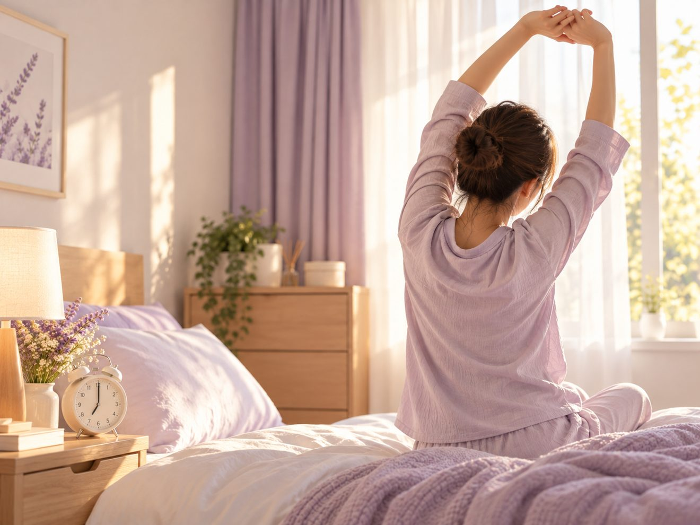

嗨，大家好～我是日日暖陽的湯湯，你的健康管理 × 體重管理師 
在做體重管理的朋友，常常跟我說同一句話：「我吃也控制了，也有在動，體重就是不動。」
每次聽到這句，我都會先問一個看起來不相關的問題：「你昨天晚上睡了幾個小時？」
很多人愣了一下才回答：五個多小時吧，追劇追太晚、工作做不完、孩子睡了才有自己的時間。吃和動大家都很努力在顧，睡眠卻常常是第一個被犧牲的。這篇想跟你聊聊，為什麼減肥卡關的時候，值得回頭看看自己的睡眠。
📖 本文目錄
睡不夠的隔天，為什麼特別餓？
你可能有過這種經驗：前一晚熬夜，隔天一整天都想吃東西，特別是麵包、甜點、炸物這類高熱量的食物。
這不是你嘴饞，是睡眠不足本來就會影響食慾。研究發現，睡得少的時候，身體裡讓人覺得餓的訊號會變強、讓人覺得飽的訊號會變弱，所以同樣吃一餐，就是比較難覺得夠。
白天已經很努力控制了，晚上又特別想吃，這時候如果睡眠也不夠，等於一邊踩煞車、一邊踩油門。
同樣瘦 3 公斤，睡太少瘦掉的不一樣
就算你很有毅力，睡不夠也照樣把熱量控制住，事情還沒有結束。
2010 年刊登在《Annals of Internal Medicine》的一項研究，找了 10 位體重過重的成年人，在研究人員安排下進行兩次、每次 14 天的熱量控制。兩次吃的一樣，差別只在睡眠：一次每晚可以睡 8.5 小時，一次只能睡 5.5 小時。
結果兩次都瘦了大約 3 公斤，但內容很不一樣：
- 睡得少的那兩週，減掉的體重裡，屬於脂肪的比例少了約 55%。
- 流失的肌肉等非脂肪組織，反而多了約 60%。
- 睡得少的時候，參與者也覺得更餓。
換句話說，體重計上的數字一樣，但睡太少的時候，瘦掉的比較不是你想減的那個部分。這個研究人數很少、時間也短，不能直接套在每個人身上，但它提醒了一件事：體重管理不只看數字，也要看身體是怎麼變的。
多睡一小時，吃得自然少一點
那反過來，把睡眠補回來會怎麼樣？
2022 年刊登在《JAMA Internal Medicine》的一項隨機分組研究，找了 80 位體重過重、平常每晚睡不到 6.5 小時的年輕成年人。一半的人接受一次個人化的睡眠諮詢，目標是把睡眠時間拉長；另一半維持原本的作息。研究期間沒有要求任何人改變飲食或運動。
在家裡照常生活兩週後，接受睡眠諮詢的那組，平均每晚多睡了約 1.2 小時，每天吃進的熱量比對照組少了約 270 大卡。
沒有人叫他們少吃，只是睡得比較夠，吃進去的就自然少了一些。對很多每天跟食慾拉扯的人來說，這可能是最不費力的一步。
大人每晚要睡多久才夠？
美國睡眠醫學會與睡眠研究學會在 2015 年發表的專家共識，建議 18 到 60 歲的成年人，每晚至少睡 7 小時。專家小組也指出，經常每晚只睡 6 小時以下，是不足以維持健康的。

你可以先對照一下自己：平常上班日，從關燈到起床，實際睡了幾個小時？如果常常落在 5、6 小時，那你的體重管理裡，可能一直少了這一塊。
把睡眠排進體重管理，四個先做得到的小步驟
知道要多睡，跟真的睡得到，是兩回事。下面這四個步驟，重點不是一次改到完美，而是先讓睡眠被排進每天的行程裡。
- 一、先記一週，看看自己到底睡多少每天早上寫下幾點睡、幾點起，一週後算算平均。很多人以為自己睡了 7 小時，算出來其實只有 6 小時不到。先知道真實的數字，才知道要補多少。
- 二、先固定起床時間比起逼自己幾點一定要睡著，固定每天差不多的時間起床比較容易做到，假日也不要差太多。起床時間穩了，晚上想睡的時間通常也會跟著穩下來。
- 三、一次提早 15 分鐘就好平常一點才睡的人，不用一下子改成十一點。這週先提早 15 分鐘上床，習慣了再提早 15 分鐘。小步慢慢挪，比一次大改更容易撐下去。
- 四、睡前留一段「不看手機」的時間很多人的睡眠，是被最後那一小時滑掉的。睡前把手機放到伸手拿不到的地方，換成洗澡、伸展、看幾頁書，讓身體知道該準備休息了。
最後一個提醒：某天睡不好，不用懊惱。睡眠跟體重一樣，看的是長期的節奏，隔天照常起床、晚上照常上床，就是最好的回到軌道的方法。
想先看看自己的身體狀態，可以從哪裡開始？
體重卡關，原因很少只有一個。睡眠、作息、壓力、活動量常常糾在一起，只盯著體重計，很容易越看越灰心；先退一步看看自己整體的狀態，反而比較知道該從哪裡調整。
這也是我在日日暖陽會先做 MEAD 健康需求評估的原因。
MEAD 經絡檢測是一種健康管理輔助工具，透過檢測身體十二經絡的能量平衡狀況，協助了解目前的身體能量狀態，作為日常保養與生活習慣調整方向的參考。
- 不會痛、不用抽血，只需要手腕接觸儀器，整個過程大約 3 分鐘。
- 不用空腹，也不需要特別準備。
- 我會陪你一起看結果，再依照你的作息、睡眠和最近的生活狀況，聊聊可以先從哪一件小事開始。
MEAD 不是醫療診斷工具，也不能取代醫師的專業判斷。如果你的狀況符合下一段列出的情形，請優先找專業醫療人員。
什麼情況應該找專業？
如果你出現以下狀況，可能不只是作息的問題，建議到睡眠專科、家醫科或身心科讓醫師評估：
- 難以入睡、半夜醒來睡不回去，一週好幾次、持續好幾週
- 家人說你打鼾很大聲，或睡覺時好像會停止呼吸
- 睡眠時間夠了，白天還是很睏，甚至影響開車或工作
- 情緒低落、提不起勁持續超過兩週
告訴自己：好好睡覺不是偷懶，是照顧自己的一部分。